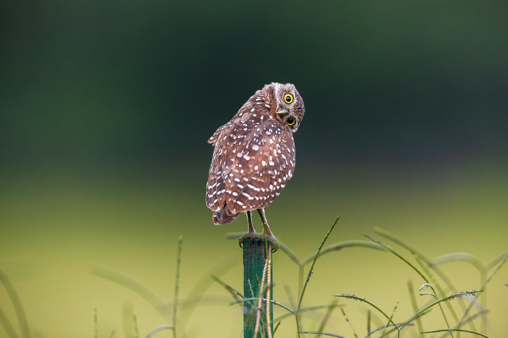

coruja buraqueira
Curiosidades sobre a coruja buraqueira
é uma ave pequena, diurna e noturna, que vive em tocas no solo (geralmente abandonadas por tatus) em áreas abertas como campos, praias e aeroportos. São caçadoras vorazes de insetos e pequenos roedores, formam grupos sociais e podem simular o som de cobras para defender seus ninhos

Fatos interessantes
- Habitante do Subsolo: Ao contrário da maioria das corujas, elas vivem em tocas no chão, que podem escavar com o bico e as patas ou reaproveitar de tatus.
- Diurnas e Noturnas: Embora corujas sejam famosas por serem noturnas, a buraqueira é muito ativa durante o dia, especialmente de manhã cedo e no final da tarde.
- Ameaça de Cascavel: Para proteger seus filhotes de predadores, a coruja-buraqueira imita o som de uma cobra cascavel quando ameaçada dentro da toca.
- Caçadoras Versáteis: Sua dieta inclui insetos (besouros), pequenos mamíferos, aves, répteis e anfíbios. Elas podem caçar em pleno voo ou saltando no solo.